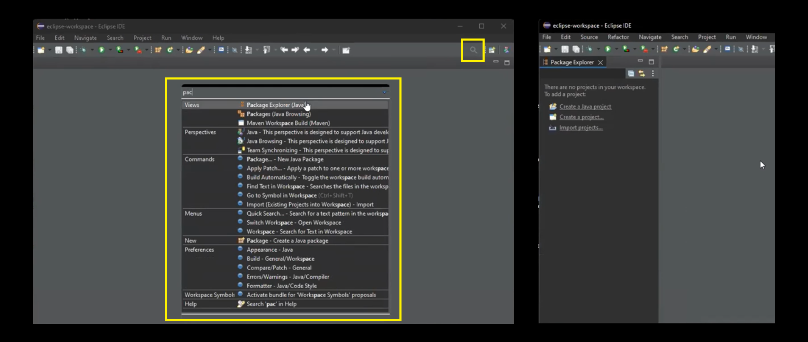

Operators and Variables
Eclipse Installation
Install Eclipse IDE for Java Developers.
Open Eclipse IDE.
If by chance, you see a blank screen like below,
Project Exploreris not open.
Then, you can open it by clicking on the search icon and search for
package explorerand hit enter. This will open package explorer on the right sidebar.
Create a new project:
File > New Project > Java ProjectEnter the name of your project (Don't use spaces).
- Use default location
- JRE: Use an execution environment JRE:
JavaSE 11 - Project Layout: Create seperate folders for sources and class files
- Module: Uncheck create
module-info.javafile - Finish
VS Code Installation
Create a directory where you want to save all your codes. Open that folder using vscode.
Create a task:
Terminal > Configure Tasks > Create task.json file from template > Others # and it will create vscode/tasks.json fileThe tasks should look like this for proper execution of the java files (especially the ones present in sub-folders,
-cpsetting classpath is very important).{ // See https://go.microsoft.com/fwlink/?LinkId=733558 // for the documentation about the tasks.json format "version": "2.0.0", "tasks": [ { "label": "compile-and-run-java", "type": "shell", "command": "javac '${file}' && java -cp '${fileDirname}' ${fileBasenameNoExtension}", "group": { "kind": "build", "isDefault": true } } ] }Now you're good to go. Open any file and press
Ctrl + Shift + Bto run the program in the shell.